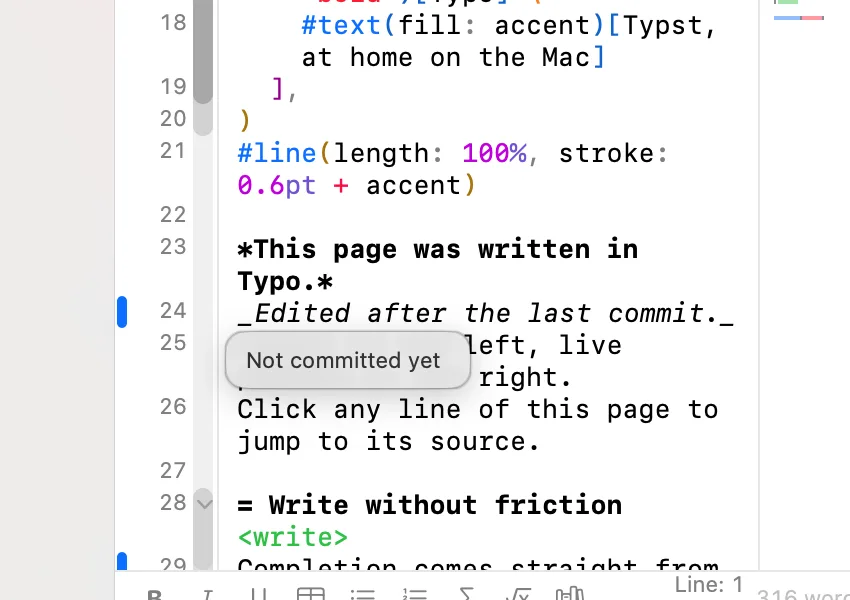
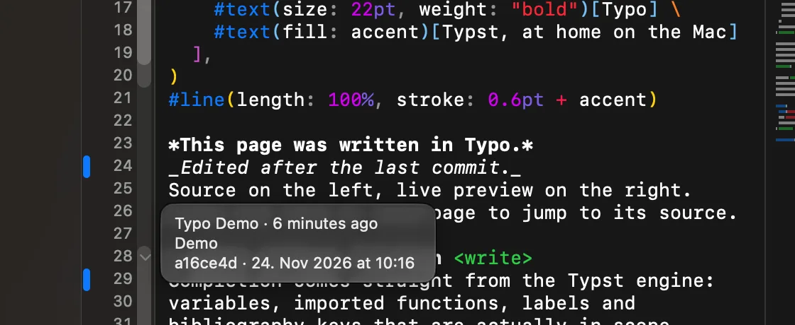

History
Typo shows Git changes while you write and keeps local snapshots of your files.
Git
Git features are on by default. To turn them off, change Enable source control in Settings › Source Control. When it is off, the Git menu and the Changes navigator go away.
If the project is not a Git repository yet, choose Git › Create Git Repository.
Changes in the gutter
Change bars next to the line numbers show what differs from the last commit. When the pointer rests on a line, a blame card shows who last changed it.


The Changes navigator
Open it with Git › Show Changes (⌥⌘C) or ⌘6. It lists changed files, staging and the commit message.
The Git menu
- Git › Show File History lists the commits that changed the current file, with the diff of each.
- Git › Pull (⌥⌘X) fetches from the remote and fast-forwards. Git › Push sends your commits. Both need a remote.
- Git › Stash Changes… puts every change aside, new files included.
- Git › New Branch… creates a branch at the current commit and switches to it. Other branches are listed as Switch to “name”.
Snapshots
Typo keeps local snapshots of your project, separate from Git. Choose File › Snapshots… to browse them and restore an earlier version.